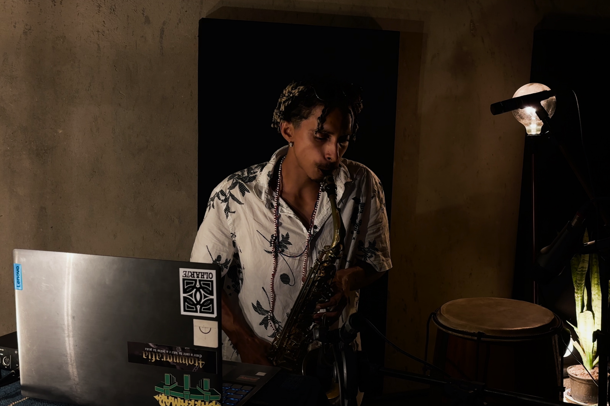
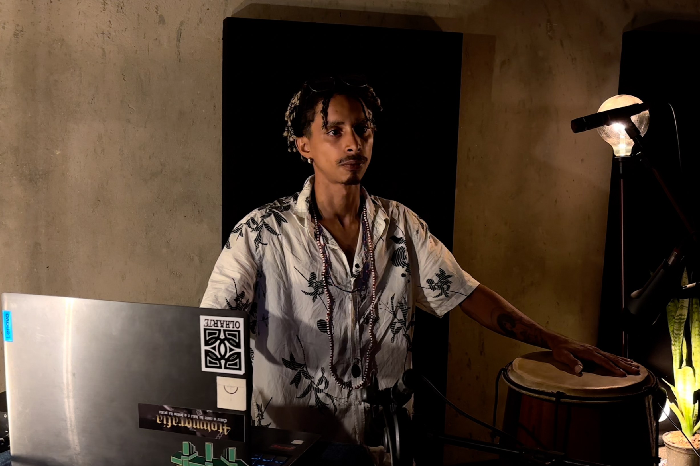
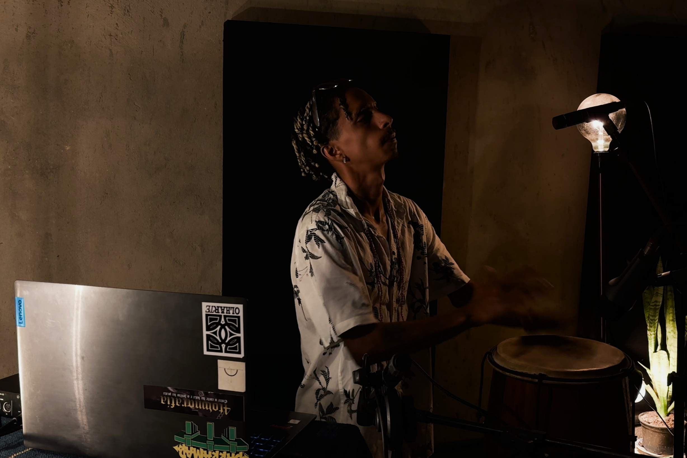

SONA presents DAVINCI
MACUMBA JAZZ AND THE POWER OF COMMUNITY

Barra do Ceará, a coastal neighborhood in Fortaleza, is shaped by historical boundaries and popular traditions. In the 17th century, Portuguese troops under Captain-major Pero Coelho tried to build a fortress there, but they met resistance from Indigenous peoples and Black communities who refused to be erased. This history of struggle and Afro-Indigenous survival still resonates in everyday life: capoeira circles in the squares, reggae parties, and rap battles on the sidewalks. Barra is, therefore, a place where memory and creativity intertwine, and it was in this environment that Davinci grew up. He recently released Dominante das Ruas (2025), an album blending jazz, hip-hop, and Afro-Indigenous traditions into narratives deeply rooted in local experience.
As a child and teenager, Davinci absorbed this rich soundscape. American rap reached him through radios and shared USB drives in the neighborhoods, with artists like Jay-Z and Akon. Among the rap styles, boom bap, with its crisp, defined beats—became his first framework for composing. Within it, he learned to sync words and rhythm, a discipline that later paved the way for instrumental dialogues, especially with the saxophone.
Gradually, his repertoire expanded to Brazilian music: samba, maracatu, bossa nova, and popular songs opened new possibilities. Writing lyrics evolved into vocal improvisation, which extended into instrumental exercises. Jazz entered as a key to expansion, not through technical virtuosity, but through the spiritual dimension of artists like John Coltrane and Pharoah Sanders, who treated improvisation as a form of prayer. Davinci saw parallels between this approach and what he observed in the terreiros: music as call, music as ritual.
His stage name, Davinci, refers to the street where he grew up in Barra do Ceará. Taking this name was his way of turning a concrete geography into a sonic emblem, carrying the weight and history of his community. This process of crafting identity from local experience finds a parallel in Mano Brown, a leading figure in Brazilian rap, whose stage surname emerged from samba, when he played the repique de mão (a hand drum used in samba) and improvised verses inspired by James Brown–style funk rhythms. In both cases, the name grows out of daily practice deeply rooted in a territory or tradition, whether a street or samba, projecting memory and energy beyond the local.
This sense of collectivity deepens in the Afrokaos collective, a project Davinci founded with other artists within the Selo do $.E.C.U.L.O label, in the neighboring district of Pirambu. Afrokaos operates as a permanent experimental workshop: recycled instruments, radical improvisation, and visual experiments intersect to create unique soundscapes. The group merges local tradition with inventive materials and spontaneous rhythms, turning collective practice into a sonic laboratory where each session is an opportunity to rethink the relationship between sound and ancestral territory.
Ancestry is central to Davinci’s work. In an interview with SONA, he cites Mestre Pastinha, a reference in capoeira angola, the traditional Afro-Brazilian martial art that combines dance, music, and ritualized combat. Pastinha famously said that capoeira is “everything the mouth eats.” At first glance, this sounds metaphorical, but for Davinci it’s a practical key: music, like capoeira, is nourishment, but also practice, discipline, and improvisation. In his musical approach, this shows up in the combination of rhythmic rigor, drawn from the cadence of berimbaus and drum patterns, with openness to improvise and respond to the environment, as if each performance were a game.
This “game” is directly connected to Afro-Indigenous religious traditions. Davinci mentions, for instance, the Terecô, an Afro-Brazilian religious practice from Codó, Maranhão, combining African (especially Bantu), Indigenous, and Catholic elements. Also known as Tambor da Mata (Forest Drum), Terecô takes place in tents led by a pai or mãe de santo (priests or priestesses in Afro-Brazilian religions), where the “enchanted” (spirits) manifest through drums, songs, and sometimes saxophones. For Davinci, seeing the saxophone in this context revealed how contemporary instrumental improvisation can dialogue with ancestral practices, creating space for a respectful reimagining of the familiar. Each rhyme, he explains, demands responsibility. You must “know how to enter and know how to leave”, he says, as in a capoeira circle. This care links the hip-hop MC’s tradition to African and Afro-Brazilian oral practices, where words carry transformative energy.

Dominante das Ruas represents, so far, the peak of Davinci’s trajectory. On the album, rap beats intertwine with liturgical drums, synthesizers converse with saxophone improvisation, and recorded voices layer across one another. In this interplay, each element provokes the others, revealing the energy of ancestral inspiration in the music. A contemporary parallel can be found in Brass (2020) by Billy Woods and Moor Mother, where experimental hip-hop mixes dense layers of voice, noise, and historical references, showing how Black tradition and experimentation can coexist in tension and dialogue without losing political and poetic depth.
Davinci’s current focus is what he calls “macumba jazz,” using the Brazilian term macumba, often misunderstood abroad, but originally referring to Afro-Brazilian religious practices, rituals, and musical traditions. In his work, it means a way for the saxophone to resonate as an extension of the drums, where each improvised phrase acts as a ritual gesture, weaving rhythm, melody, and pause to create tension and breath in the music. On the first track recorded for SONA, Fora de Tabuleiro (Off the Board), this approach appears in the alternation of varied verses and the repeated word “renasceu” (“reborn”) over a foundation of percussion, guitar, and synthesizers, creating cycles of anticipation and release reminiscent of the movements in a terreiro chant or a capoeira circle. Each saxophone improvisation interrupts or responds to the percussion, alternating between dialogue and counterpoint, as if the instrument’s voice summoned the community’s collective memory without overpowering it.
On Zona de Nagô (Nagô Zone), Davinci works over luminous, cyclical electronic loops, establishing tension in the interplay between drum and sax. While the repetitive foundation seems to form a kind of resistant layer, the acoustic instruments seek to break through it. The drum emphasizes some pulses and challenges others, and the sax punctuates the electronic layer with precise notes. Each instrumental touch becomes a micro-ritual of dialogue between percussive tradition and electronic invention, making the music breathe like the encounters that inspired Davinci and reflecting the resilience and inventiveness of his roots.
For him, music relies on community gathering spaces, like those he experienced in Barra do Ceará: squares, terreiros, collective studios, and rap battles. Despite threats from real estate speculation and systemic lack of cultural policies, these spaces endure as sources of creativity and continuity. He also emphasizes that the periphery is not uniform: every neighborhood has its own soundscape, timbres, and ways of telling stories. Recognizing this diversity guides his work.
Beyond Afro-Indigenous resilience, Davinci’s work also emphasizes hope. While reflecting on violence and exclusion, the historical themes of hip-hop, he understands that singing about life and celebration is equally necessary. This choice is not naive but a conscious strategy: affirming positivity is a way of inheriting and updating the logic of Afro-diasporic traditions, which have always known how to turn pain into creation. It’s the same with blues, born from oppression in the southern United States; samba, which flourished in Rio’s Black communities; and spiritual jazz and rap, where words and improvisation became tools for world-building.
By situating himself within this lineage, Davinci shows that his music can project possible worlds, cultivating collective experiences where historical struggle and imaginative visions of the future coexist. His arrangements and performances evoke stories of resistance while inviting listeners to imagine alternative pathways. Music becomes a space of connection between generations and communities. Through the interplay of local rhythms, instrumental improvisation, and rap poetry, Davinci builds sonic landscapes that suggest ways of living together and fostering social transformation, showing that art can simultaneously record the past and propose a future.